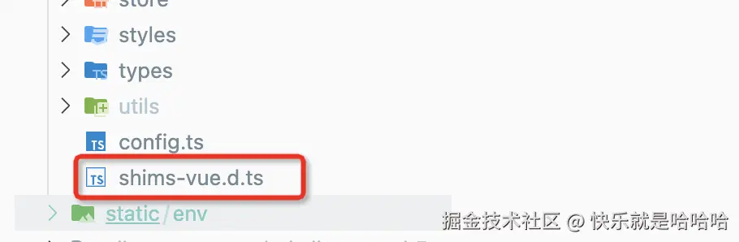
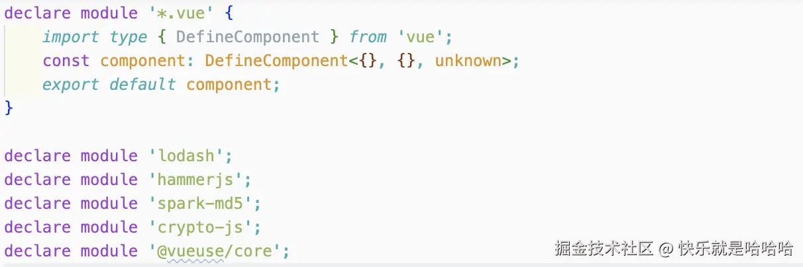
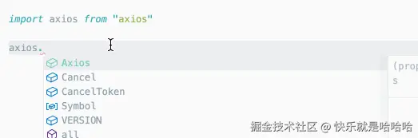
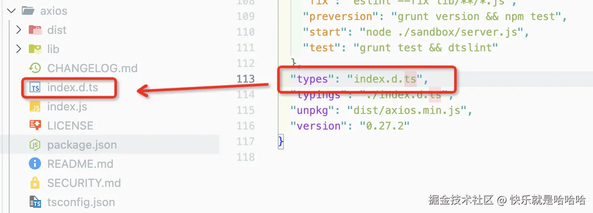
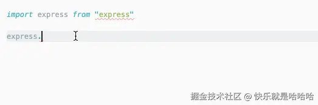
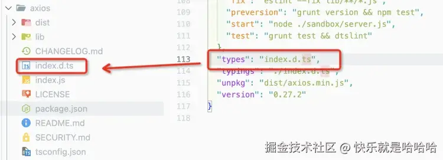

HaoTian · 2024-11-26 20:58:37
最近开发项目，发现公司代码里都有一些.d.ts 后缀的文件
还有一些奇奇怪怪的 declare 代码
秉持着虚心学习的态度，我向同事请教了这些知识点，发现这些东西居然蛮重要的。于是，我根据自己的理解，把这些知识简单总结一下。
.d.ts 文件？如果我们在 ts 项目中使用第三方库时，如果这个库内置类型声明文件.d.ts，我们在写代码时可以获得对应的代码补全、接口提示等功能。
比如，我们在 index.ts 中使用 aixos 时：
当我们引入 axios 时，ts 会检索 aixos 的 package.json 文件，并通过其 types 属性查找类型声明文件，查找到 index.d.ts 这个文件后，就会根据其内部配置进行语法提示。
但是如果某个库没有内置类型声明文件时，我们使用这个库，不会获得 Ts 的语法提示，甚至会有类型报错警告
像这种没有内置类型声明文件的，我们就可以自己创建一个 xx.d.ts 的文件来自己声明，ts 会自动读取到这个文件里面的内容的。比如，我们在 index.ts 中使用"vue-drag"，会提示缺少声明文件。
由于这个库没有@types/xxxx 声明包，因此，我们可以在项目内自定义一个 vueDrag.d.ts 声明文件。
// vueDrag.d.ts
declare module "vue-drag";
这个时候，就不会报错了,没什么警告了。
当我们引入第三方库时，ts 会自动检索 aixos 的 package.json 文件，并通过其 types 属性查找类型声明文件，查找到 index.d.ts 这个文件后，就会根据其内部配置进行语法提示。比如，我们刚才说的 axios
如 express 这类框架，它们的开发时 Ts 还没有流行，自然没有使用 Ts 进行开发，也自然不会有 ts 的类型声明文件。如果你想引入它们时也获得 Ts 的语法提示，就需要引入它们对应的声明文件 npm 包了。
使用声明文件包，不用重构原来的代码就可以在引入这些库时获得 Ts 的语法提示
比如，我们安装 express 对应的声明文件包后，就可以获得相应的语法提示了。
npm i --save-dev @types/express
@types/express 包内的声明文件
通过上述的几个示例，我们可以知道.d.ts 文件的作用和@types/xxxx 包一致，@type/xxx 需要下载使用，而.d.ts 是我们自己创建在项目内的。
.d.ts 文件除了可以声明模块，也可以用来声明变量。
例如，我们有一个简单的 JavaScript 函数，用于计算两个数字的总和：
// math.js
const sum = (a, b) => a + b;
export { sum };
TypeScript 没有关于函数的任何信息，包括名称、参数类型。为了在 TypeScript 文件中使用该函数，我们在 d.ts 文件中提供其定义：
// math.d.ts
declare function sum(a: number, b: number): number;
现在，我们可以在 TypeScript 中使用该函数，而不会出现任何编译错误。
.ts 是标准的 TypeScript 文件。其内容将被编译为 JavaScript。
*.d.ts 是允许在 TypeScript 中使用现有 JavaScript 代码的类型定义文件，其不会编译为 JavaScript。
shims-vue.d.ts 文件的主要作用是声明 Vue 文件的模块类型，使得 TypeScript 能够正确地处理 .vue 文件，并且不再报错。通常这个文件会放在项目的根目录或 src 目录中。
shims-vue.d.ts 文件的内容一般长这样：
// shims-vue.d.ts
declare module "*.vue" {
import { DefineComponent } from "vue";
const component: DefineComponent<{}, {}, any>;
export default component;
}
declare module '*.vue' : 这行代码声明了一个模块，匹配所有以 .vue 结尾的文件。* 是通配符，表示任意文件名。import { DefineComponent } from 'vue'; : 引入 Vue 的 DefineComponent 类型。这是 Vue 3 中定义组件的类型，它具有良好的类型推断和检查功能。const component: DefineComponent<{}, {}, any>; : 定义一个常量 component，它的类型是 DefineComponent，并且泛型参数设置为 {} 表示没有 props 和 methods 的基本 Vue 组件类型。any 用来宽泛地表示组件的任意状态。export default component; : 将这个组件类型默认导出。这样，当你在 TypeScript 文件中导入 .vue 文件时，TypeScript 就知道导入的内容是一个 Vue 组件。.d.ts 文件中的顶级声明必须以 “declare” 或 “export” 修饰符开头。
通过 declare 声明的类型或者变量或者模块，在 include 包含的文件范围内，都可以直接引用而不用去 import 或者 import type 相应的变量或者类型。
declare type Asd {
name: string;
}
declare module "*.css";
declare module "*.less";
declare module "*.png";
.d.ts 文件顶级声明 declare 最好不要跟 export 同级使用，不然在其他 ts 引用这个.d.ts 的内容的时候，就需要手动 import 导入了
在.d.ts 文件里如果顶级声明不用 export 的话，declare 和直接写 type、interface 效果是一样的，在其他地方都可以直接引用
declare type Ass = {
a: string;
};
type Bss = {
b: string;
};